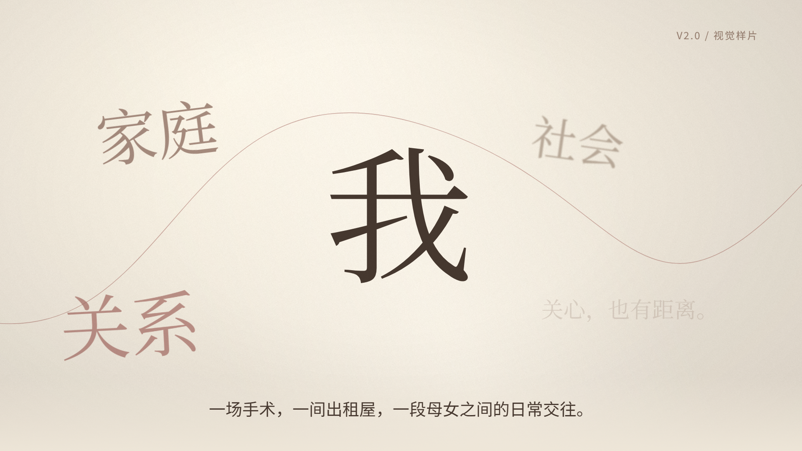
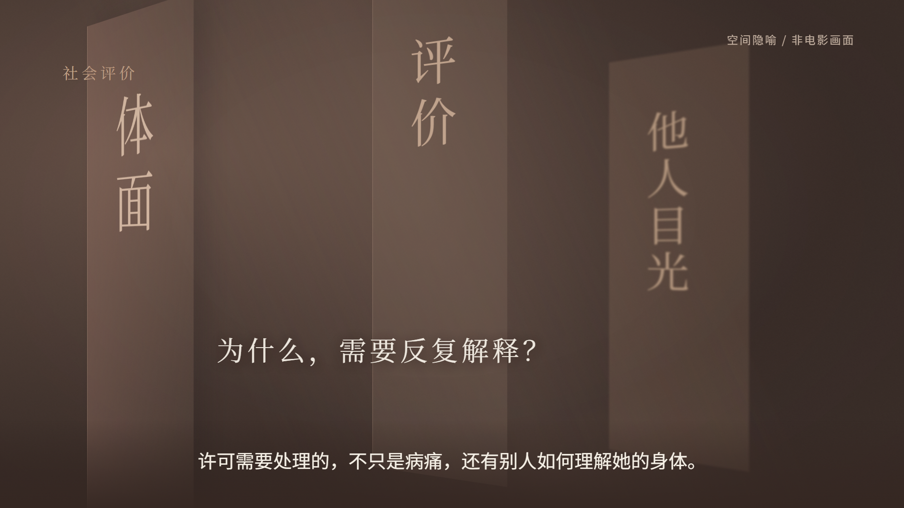

V2.0 · 温暖现实主义电影随笔 · 60秒样片
“我”的身体，谁来许可？
从一个“我”，走进具体的关系。前30秒是电影感开场；后30秒以空间、距离和目光，讨论“一场手术，为什么反复受到阻碍”。
旁白为旧版AI临时节奏参考，可静音审看片段。
两个片刻，两种观看距离。




把视听形式，交给内容。
字形从近景退回人的尺度，关系的词语在不同景深中靠近；纸张般的边界分开，让问题获得空白。后半段以纸面、色面和空间切换形成阻力，再用短暂停格提示未来的镜头细读。
此轮只审核60秒的视觉语言。获准编辑的电影画面与真人旁白补入后，才继续完成8分钟V2。原版8分钟网页和视频保持不变。